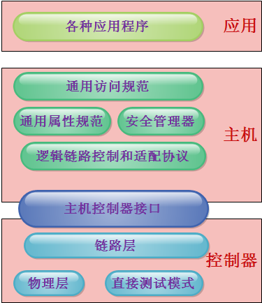
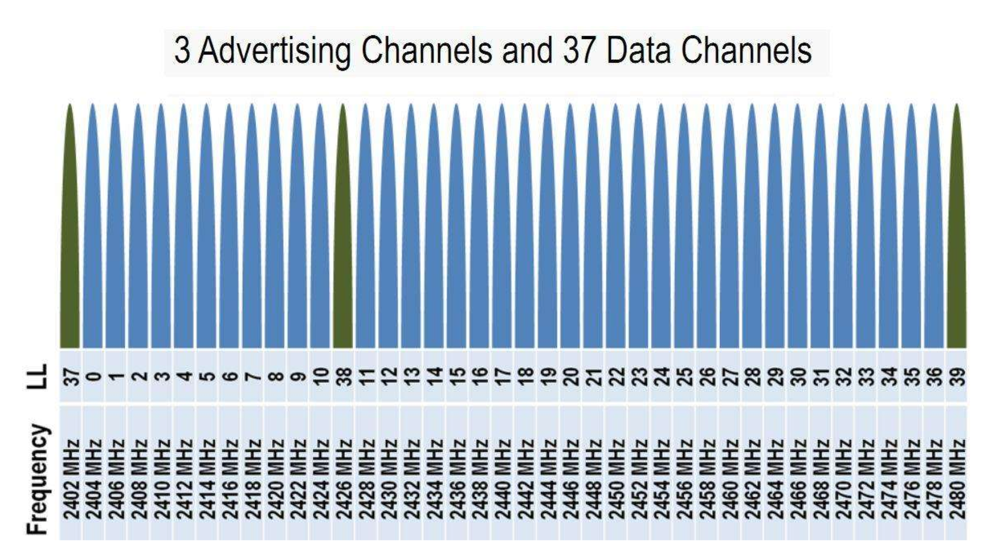
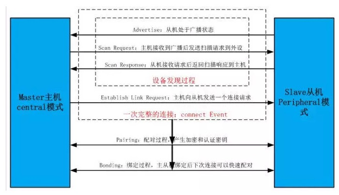
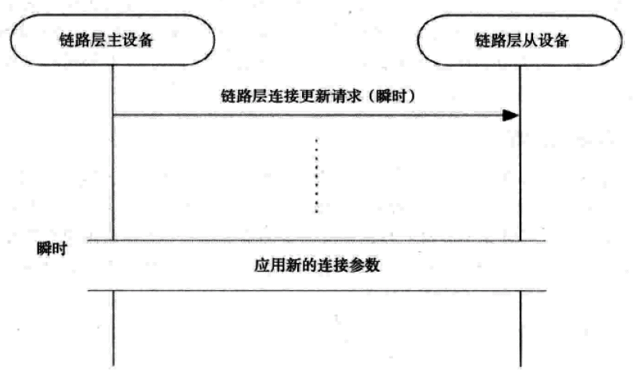
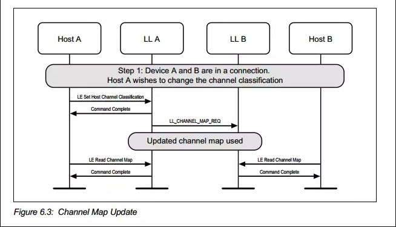
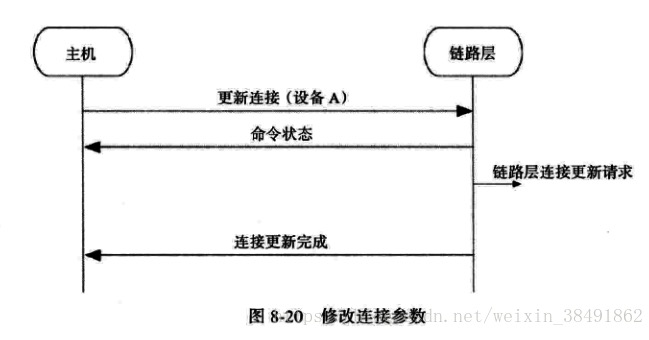
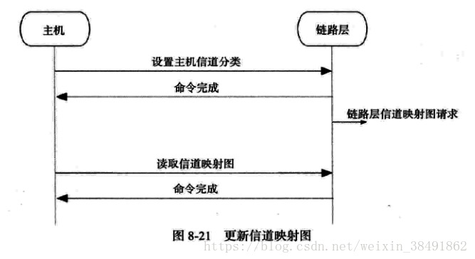
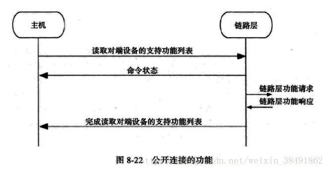
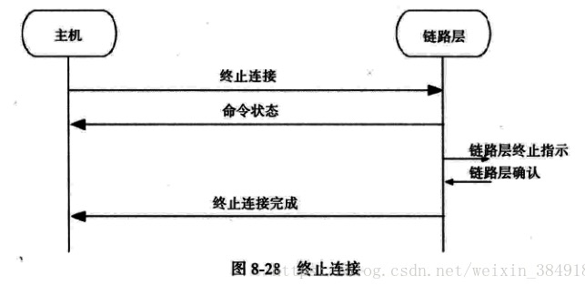

Table of Contents
1 Other
2 一， 什么是低功耗蓝牙技术
BLE是当前可以用来设计和使用的功耗最低的无限技术
2.1 低成本：
- ISM频段: 免交租金，免许可，但是传播特制差，能量极易被各类物体吸收。
- IP许可: 加入BT SIG联盟，专利许可成本大大降低。
- 低功耗: 减少制作材料。
2.2 设备类型: 双模设备和单模设备
双模设备：支持蓝牙和低功耗蓝牙 单模设备: 支持低功耗蓝牙
2.3 设计目标
最根本的目标就是实现最低的能耗。 对体系结构的每一层都进行了优化，以降低执行任所需的能耗。 低功耗蓝牙对主机个协议也做了优化，主要是为了减少从连接建立到应用程序完成数据发送所需的时间。 还包含最初的目标：
- 全球操作
- 低成本
- 鲁棒性(Robust)
- 短距离
- 低功耗
短距离有一些问题：
- 低功耗蓝牙网络并不是一个蜂窝基站系统，而是一个人人的局域网。
- 为了减少设备端的信号传输的能耗，接收方必须保持较高的灵敏度, 例如scan，write， read等。
3 二，基本概念
3.1 纽扣电池: 纽扣电池是低功耗蓝牙的主要设计目标。
3.2 能量即时间：时间即能量是贯穿低功耗蓝牙设计的另一个基本概念
鲁棒的设备发现要求至少有两个设备：一个用于寻找其他设备，一个或多个设备则处于可发现状态。 在低功耗蓝牙中，一个设备如果想被发现就必须每隔几秒发送三次短消息。
数据报文的长度很短，主要是下面3个原因：
- 发送相同数据减少能量消耗。
- 控制器消除了在一次数据传输中需要不断校准无线电的需求。由于无线电模块在传送或接受时不断发热，将改变硅芯片的特性，并因此改变传输频率。 如果报文控制在较短的长度，则芯片没有足够的时间发热。
- 短期、间歇性而非长期的取电令设备可以从一个纽扣电池获得更多的能量。
3.3 昂贵的内存
3.4 非对称设计
假如一个设备只有发射器，另一个设备只有接收器，则二者构成的网络成为非对称网络。 发射器只完成最基本的功能，大部分复杂的功能运算都交给接收器。
3.5 为成功而设计
3.6 凡事皆有状态
3.7 客户端-服务器架构
3.8 模块化架构
基于通用属性规范的模块化的服务器架构，允许设备以标准的方式将原子的、可封装的行为比特装进单个服务并将其公开。
3.9 十亿只是个小数目
3.10 无连接模型
3.11 范式
- 客户端-服务器架构
- 面向服务的架构
3.11.1 客户端-服务器架构
客户端通过网络想服务器发送请求，服务器回复响应。二者分工明确，当系统的不同部分位于不同的设备上时，这种划分必不可少。
3.11.2 面向服务的架构
客户端-服务器架构之上的进一步抽象，将服务器中的信息组织成服务的模型。 该服务可以被发现，进行交互和用做已知的语义。这意味着改服务具有确定的行为，在给定相同的条件时，总会产生同样的结果。 服务具有一套规则和惯例：
- 正式合约 一个服务之所以被视为服务，是因为其在公开的功能以及如何工作两个方面提供正规的描述。
- 松耦合 在面向对象的软件中，单独的系统组件是被设计成无边界效应的独立对象。那些发生在组件之间的相互作用可以被明确地定义和测试。 将依赖关系减少到最低限度，使修改服务的实现时不会带来意想不到的边界效应，从而降低风险。
- 抽象化
- 可重用性
- 无状态 为了让众多的客户端支持服务扩展，服务器不能保存任何客户端的状态数据。
- 可组合型
- 自治
- 可发现性 要想使用服务就必须能够发现服务。 低功耗蓝牙采用的方法：使用同一个协议实现服务发现以及服务交互。
4 三，低功耗蓝牙的体系结构
低功耗蓝牙的体系结构本质上非常简单：
- 控制器 控制器通常是一个物理设备，它能够发送和接收无线电信号，并懂得如何将这些信号翻译成携带信息的数据包。
- 主机 主机通常是一个软件栈，管理两台或多台设备间如何通信以及如何利用无线电同时提供几种不同服务。
- 应用程序 实现用户需求 
4.1 控制器
蓝牙控制器同时包含了数字和模拟部分射频器件和负责收发数据包的硬件组成。
4.1.1 物理层
物理层采用2.4GHz无线电，完成间距的传输和接收工作部分。 在低功耗蓝牙中，采用一种称为高斯频移键控(GESK)的调制方式改变无线电波的频率，传输0或1的信息。
4.1.2 链路层
即Link Layer，是BLE中最复杂部分，负责广播、扫描、建立和维护连接，以及确保数据包按照正确的方式组织、正确地计算校验值以及加密序列等。其定义了三个基本概念：信道、报文、过程。 链路层信道分为两种：广播信道和数据信道 广播信道有3个，37.38.39。 未建立连接的设备使用广播信道发送数据。 数据信道有37个， 由一个自适应跳频引擎控制以实现鲁棒性。在数据信道中，可以发送数据，需要时可以重传，还可以加密和认证。 数据包结构：
| 1 | 4 | 1 | 1 | 0~37 | 3 |
| 前导 | 接入地址 | 抱头 | 长度 | 数据 | CRC |
4.1.3 HCI层
主机/控制器接口（HCI）的出现 为主机提供了一个与控制器通信的标准接口。允许主机将命令和数据发送到控制器，并且允许控制器将事件和数据发送到主机。主机/控制器接口实际上由两个独立的部分组成：逻辑接口和物理接口。 逻辑接口定义命令、事件及其相关的行为。 物理接口定义了包括命令、事件和数据通过不同的连接技术传输。已知定义的物理接口包括USB、SDIO、两个UART的变种。 因为主机控制器接口存在控制器和主机之内，位于控制器中的部分通常为主机控制器接口的下层部分；位于主机中的部分通常称为主机控制器的上层部分。
4.2 主机
主机包含复用层、协议和用来实现许多有用而且有趣的过程。
4.2.1 L2CAP层 (Logical Link Control and Adaptation Protocol)
逻辑链路控制和适配协议（L2CAP）是低功耗蓝牙的复用层。该层定义了两个最基本的概念：L2CAP信道和L2CAP命令,L2CAP信道是一个双向的数据通道，通向对端设备上的某一特定的协议和规范。每个通道都是独立的，可以有自己的流量控制和与其相关联的配置信息。 低功耗蓝牙只用了两个信道：一个用于信令信道，一个用于安全管理器，还有一个用于属性协议。低功耗蓝牙只有一种帧格式，即B帧，包含两个字节的长度字段和两个字节的的信道识别字符。**如图表，**B帧格式和传统的L2CAP的每个通道使用的基本帧格式一致，在协商使用一些更复杂的帧格式之前，传统L2CAP会一直使用该帧格式。
使用的固定信道：信令信道（signal channel），安全管理器信道（SMP），属性协议信道（ATT）。 报文结构：
| 2 | 2 | 0~65535 |
| 长度 | 信道ID | payload |
4.2.2 属性协议
属性协议定义了访问对端设备上的数据的一组规则。数据存储在属性服务器的”属性“里，供属性客户端执行读写操作。
- 在低功耗蓝牙的设计之初，使用什么样的协议就成为了一个难题。协议应当十分简单，因为任何的复杂性都会增加额外的成本和所需的存储空间；同时，协议的数量要越少越好。由此，有人认为使用一种单一的、普适的协议在该技术的起步阶段是最佳的选择。不过这个想法并没有完全实现。低功耗蓝牙最后使用了三种协议：逻辑链路控制和适配协议(L2CAP)，安全管理协议(SM)和属性协议(AP)。精简协议：所有的计算乃至世上的大部分事物都围绕着协议运转。大多数的行为有其自身的协议，例如：载入网页用到了超文本传输协议(HTTP)；传输文件用到了文件传输协议(FTP)；安全的登陆另一台电脑，用到了安全外壳协议( SSH)。每一种协议都专攻于它自己的应用场合，试想要是用HTTP协议传输大量的文件，或是用FTP拇议登录电脑，那显然是欠缺效率的。低功耗蓝牙技术和成堆的因特网协议的最大区别在于，低功耗蓝牙技术并不试图传输多样化的数据类型。考虑到不会用来传输大批量的数据或是流媒体音乐，为其开发一种能够处理有限的几种数据类型的协议就可以。这种协议被称为属性协议，是整个蓝牙技术的基石和构造组件。只有理解了属性协议才能理解低功耗蓝牙技术。
- 数据与状态：还有一个需要理解的概念是：数据( data)与状态（state）这两者有着显著的差别。数据是一个值，它反映了某种客观性质，比如某种测量的结果、读数。数据可以是温度计涮出的房间温度，也可以是供暖系统测出的室内温度；它们都可以被不同的设备测量出来。而状态则反映了某个设备的当前状况或处境：它在做什么、是怎么运作的。设备的状态只有它自己知道，并靠自身维持。温控器测量室温，温度的度数则反映了房间温度的状态。几种常见的状态：低功耗蓝牙用到了三种不同种类的状态类型：外部状态、内部状态与抽象状态。物理测量值反映了物理传感器或者类似接口的当前状态+让我们设想一个浴室里的体重计。
- 状态机：有趣的是，有限状态机可以明确地使用属性协议和可公开的状态来表示。状态机反映了设备的内部状态，并且有一个或多个外部的辅人接口。这些外部辅人为瞬时命令，根据其他状态信息或行为来改变状态机的状态。这是一个抽象状态，或称为控制点。
- 服务和规范：从经典蓝牙到低功耗蓝牙，最有趣的转变是服务和规范的体系结构。经典蓝牙里的规范和协议大多定义的是行为与交互指南，它们极其复杂，糅合了许许多多不同的概念。其中，一个最大的问题是这些规范倪定义了两种设备类型，位于链路的两端，再对各自的行为分别定义。粗略地看来，这种做法似乎很有必要：好比体有一部手机和车载（免提）套件，我们必须基于具体应用为其定义各自的工作方式以及交互方式。不幸的是，这也造成了一些麻烦。首当其冲的问题在于，现有的规范对网络中的设备自身的行为定义不够明确。换言之，即便看起来两个设备都定义了各自的行为，但有时候设备自身到底应该怎么做其实并不清楚。低功耗蓝牙使用了一种截然不同的方法来解决上述问题。首先，它采用了纯粹的“客户端一服务器”的结构，针对不同的用例对服务器和客户端的行为单独进行描述。服务器的行为在服务器规格书中定义，而用户的行为在另一规范说明中定义。通过一个属性数据库，服务器规格书定义了需要公开的状态以及通过属性可以实现的行为。将服务器和客户端区分开的最大的好处是，服务器的行为将是预先定义并可知的。它只会做服务说明中定义的“该做”的事情，不会关心客户端将怎样去使用它。这意味着服务可以独立执行单元测试，而与客户端无关；任何客户端可以在必要的时候使用这些服务。举个例子，假设有一种提供时间的服务，某个客户端可用其获取当前时间；另一个客户端周期性地读取当前时间来判断自身的时钟漂移；其他客户端还可以请求其使用GPS接收机以便获得最精确的授时。你瞧，这个时间服务并不关心客户端在做什么，它仅仅提供该服务罢了。
4.2.3 通用属性规范
通用属性规范位于属性协议之上，定义了属性的类型以及其使用方法。它引入了一些概念，包括“特征”、”服务“、服务之间的”包含“关系、特性”描述符“等。 它还定义了一些规程，用来发现服务、特性、服务之间的关系，以及用来读取和写入特性值。
服务间的关系是可以相互组合，实现更为复杂的行为。为了适应复杂的行为和服务之间的关系，服务分为首要服务和次要服务。
4.2.4 通用访问规范
通用属性规范定义了设备如何发现、连接，以及为用户提供有用的信息。还定义了设备之间如何建立长久的关系，成为绑定（binding)。
4.3 应用层
应用层规约定义了三种类型：特性(characteristic)、服务(service)、规范(profile)。
5 四、物理层
5.1 2.4GHz
低功耗蓝牙采用2.4GHz 工业、科学及医疗(ISM)频段传输信息。这个频段有2个特殊之处：
- 不需要授权
- 唯一一个在所有国家都无需授权的频段
5.2 调制
低功耗蓝牙采用了高斯频移键控。高斯滤波器通过增加从一个值到另一个值的频率转换时间，优化了一个符号到下一个符号的转换，减少噪声，减少发射功率。 低功耗蓝牙的物理层比特率为1Mbps，调制指数约为0.5。
5.3 射频信道
低功耗蓝牙传输信息使用40个无线信道，每个信道的中心频率可以根据简单算术算出： fc = 2402 + 2k 
5.4 距离
理论上BLE的通信距离可以达到几百米远，但主要还是根据发射功率和接收机灵敏度决定的,我用的时候也就10米之内喽。
6 五、链路层
链路层定义了两个设备如何利用无线电传输信息。它包含了报文，广播，数据信道的详细定义，也定义了其他设备的流程，广播的数据，连接的建立，连接的管理以及连接中的数据传输。
6.1 链路层的状态机
链路层的状态机定义了5中状态：
- 就绪态
- 广播态
- 扫描态
- 发起态
- 连接态
由上面可以看出，低功耗蓝牙另一个基本设计策略：将广播、发现和连接过程与连接中的数据传输分离开来。 只有在连接态中使用数据报文，广播态、扫描态、发起态使用广播报文。 连接态有2个子状态：主或从。在连接态中，2个设备相互传送数据信道报文。 另外，链路层是一个“独裁者”，如果成为了主设备，便不能同时成为从设备。类似地，从设备也不能同时成为主设备。这也意味着主设备不能发送可用于连接的广播报文。
6.2 报文
低功耗蓝牙规范中，有两类报文：广播报文和数据报文。是广播报文还是数据报文由其传输所在的信道决定的。
6.2.1 白化
频移键控接收机的一个有趣之处在于，其连续接收相同比特的能力很差。例如“0000000000”，这时候接收机会认为中心频率向左移动，进而导致频率失锁，丢失数据。 白化器是一个很短的输出“0”，“1”序列的随机数发生器，与原有数据进行异或操作，在通过白化序列逐位异或还原。 通过使用随机白化器，原始信息中的一段比特会被转化成一段高度随机化的序列。这降低了接收机评率失所的概率。如果原始数据信息已经是随机的，进一步的随机化一般也没什么坏处。
6.2.2 报文结构
数据包结构：单位bit
| 8 | 32 | 8 | 8 | 0~296 | 24 |
| 前导 | 接入地址 | 抱头 | 长度 | 数据 | CRC |
- 比特序与字节 报文是一比特一比特传输的，但他们同时也是由数据的字节组成的。当数据的字节传输时，总是从最低位开始。
- 前导 接收机用它来配置自动增益控制，以及确定“0”，“1”比特所使用的频率。 自动增益控制器必须检测出输入信号的能量等级，并调整增益，使得信号刚好处于接收机能够轻松工作的范围之中。
接入地址 报文接下来的32比特是接入地址。两种类型：
- 广播接入地址
- 数据接入地址
广播接入地址在广播数据，或是广播、扫描、发起连接时使用。数据接入地址在连接建立之后的两个设备间使用。 当控制器试图接收一个报文时，需要事先知道待接收报文的接入地址，减少噪声。 链路层也不知道其他设备啥时候发送报文，只能保留40us接收到的比特，和前导、接入地址进行匹配。这一过程称为与接入地址相关。 对于广播信道，接入地址是固定值 0x8E89BED6。 接入地址最基本的规则是不能有超过6个连“0”或”1“。数据信道接入地址与广播信道接入地址至少要有1个比特的不同。
报头 报头包含了广播报文的类型以及一些标记位，这些标记位指出了报文使用的公共地址还是随机地址。
Tyep Behavior ADVIND 通用广播提示 ADVDIRECTIND 定向连接指示 ADVNONCONNIND 不可连接指示 ADVSCANIND 可扫描指示 SCANREQ 主动扫描指示 SCANREP 主动扫描响应 CONNECTREQ 连接请求 - 长度 对于广播报文。长度域包含6个比特，有效值的范围是6~37。对于数据报文。长度域5个比特，有效值的范围是0~31。 长度域后是payload，其长度是长度域指出的字节数。
- payload 传输的真实数据。
- CRC CRC对报头、长度域以及payload进行计算，检查是否错误。
6.2.3 信道
低功耗蓝牙的信道宽度为2MHz, 经典蓝牙是1MHz。
- 跳频 跳频算法用于数据连接中。数据信道37个，是一个质数，因此跳频算法非常简单： f(n+1) = (f(n) + hop) mod 37 //hop（5~16）
- 自适应跳频 自适应跳频能够将一个已知的坏信道映射到一个已知的好信道，从而减少其他设备对数据报文传送的干扰。连接中的两个设备都要记录好、坏信道的映射关系 来调整信道。
6.2.4 设备发现
低功耗蓝牙设备通过广播信道来发现其他设备。共有4种不同类型的广播：通用的，定向的，不可连接的以及可发现的。 设备每次广播时，会在3个广播信道上发送相同的报文。这些报文被称为一个广播事件。除了定向报文以外，其他广播事件可以选20ms~10.28s的间隔。 通常，一个广播中的设备会每秒广播一次。广播事件之间的时间间隔称为广播间隔，主机可以配置它。 但是，设备周期性的发送广播会有一个问题：由于设备的时钟会不同程度的漂移，两个设备可能在很长一段时间同事广播而造成干扰。除了定向广播之外的其他广播事件， 发送时间均会被扰动。实现该扰动的方式为，在上一次广播事件发送后加入0~·0ms的随机延迟。
扫描是低功耗蓝牙广播的重要组成部分。扫描用于接收广播事件。扫描时间取决于有多少时间用于扫描以及需要多块发现其他设备。
- 通用广播
通用广播是用途最广的广播方式。进行通用广播的设备能够被扫描设备扫描到，或者在接收到连接请求时作为从设备进入一个连接。通用广播可以在没有连接的情况下发出，没有主从设备之分。
- 定向广播
当设备之间需要快速建立连接的时候，就要用到定向广播。 这种报文包含两个地址：广播着的地址和发起者的地址。(在iPhone手机上，每15分钟改变它自己的地址, 是个大限制) 发起设备收到发给自己的定向广播报文后，可以立即发送连接请求作为回应。 定向广播事件也有特殊的时序要求。完整的广播事件必须每3.75ms重复一次。这一要求使得扫描设备只需要扫描3.75ms便可以收到定向广播设备的消息。 如此快的发送会让报文充斥着广播信道，定向广播不可以持续1.28s以上的时间。一旦到了1.28，主机便只能使用间隔长得多的通用广播让其他设备来连接。 当使用定向广播时，设备不能被主动扫描。此外，定向广播报文的payload中也不能带有其他附加数据。该payload只能包含两个必需的地址，别无其他。
- 不可连接广播
- 可发现广播
该设备可以被发现，既可以广播数据，又可以响应扫描，但不能建立连接。
6.2.5 广播
广播数据能够被附近的任何被动或主动扫描设备接收到。广播数据的接收无法被确认。广播设备无法知道时候有设备接收到它的数据，或者是否有设备试图侦听它的数据，是一种不可靠的操作。
6.2.6 建立连接
连接使用数据信道在两个设备之间可靠地发送信息，采取了自适应跳频增强鲁棒性(robust),同时使用了非常低的占空比，尽可能地降低功耗。 设备创建连接的过程：  设备首先广播可连接广播事件，其他设备收到后即可发起连接。 连接开始需包含的信息：
- 连接中使用的接入地址 由主设备提供，随机生成，需要遵循一些规则。
- CRC初始值 由主设备提供的随机数，可以保证主设备同不同的从设备通信。
- 发送窗口大小
- 发送窗口偏移
- 连接间隔
- 从设备延迟
- 监控超时
- 自适应跳频信道图
- 跳频算法增强
- 休眠时钟精度
- 发送窗口
从设备可以自行决定广播时间，是最需要保存电量的设备。但是，如果主设备已经在做其他事情，也许是一些更重要的事情，那么它必须让低功耗蓝牙错开当前的活动。 在连接建立期间，用窗口大小和窗口便宜传递上述信息。 当连接请求数据包发送完毕，存在一个1.25ms的强制时延，紧接着是发送上述两个参数。发射窗口便宜可以是0到连线间隔之间的任意值，但必须为1.25ms的整数倍。 从发送窗口开始，从设备打开其接收器，并等待来自主设备的数据包。如果到发送窗口结束时仍未收到数据包，从设备终止倾听，并会在一个连接的间隔后再次尝试。
iOS由于系统封装的层很高，只需要进行扫描，连接，获取服务和特性后，进行读写操作。MTU大小和Interval都自动设备。 Android相比较于iOS可以设置MTU大小，设置失败时候默认23。
- 连接事件
在一个连接当中，主设备会在每个连接事件里向从设备发送数据包。
6.2.7 发送数据
在一个连接里，设备通过在连接事件中发送数据包来相互通信。数据报文和广播报文不同，前者是单独进行的通信，后者则是对所有的侦听设备发送广播。 广播报文和数据报文间最大的区别是报头的格式和payload的长度。 数据报文的payload可以为0~31字节不等。payload长度为0视为空包。 无论链路层加密与否，传给控制器的未加密数据包最多只能携带27个字节的数据。
- 数据报头
包含4个字段：
- 逻辑链路标识符(LLID)
- 序列号(SN)
- 下一个预期序列号(NESN)
- 更多数据(MD)
- LLID
它用于判断数据报文属于哪种类型： a. 链路层控制报文(11) -— 用于管理连接 b. 高层报文(10) -— 也用于一个完整报文 c. 高层报文延续(01) 数据包LLID为11，会直接交给链路层控制实体，由它来解析改数据包内容。
所有其他的数据包都要经过主机，要么来自主机，要么发给主机。 主机能够发送大于27字节的数据，但由于无法放入单个链路层的数据包，必须支持分段。 具体做法就是把数据包贴上“高层报文开始”或"高层报文继续"的标签。
- SN
为了使数据传输变得可靠，所有的数据包均带有序列号。连接建立后，第一个数据包的序号为0；每次发送新的数据包时，其序列号与上个数据包的序列号不同。 这使得接收装置能够判断接收的数据包的性质：如果序列号与之前的一样，则为重传报文，如果序列号和之前的不同，则为新报文。 在数据包中，用一个比特来表示序列号，在1和0 之间交替。
- 确认
数据包的确认需要用到另一个比特，即所谓的下一个期望序列号。 Transmit
- 更多数据
它用来通知对端设备自己还有其他的数据准备发送。如果收到了它，应该在当前连接事件中继续与端设备通信。
{kind=link}
6.2.8 加密
在连接时，可以对payload中的数据进行加密，确保数据的机密性，从而抵御攻击者。 后续仔细看。
6.2.9 管理连接
两个设备一旦连接，便可以收发数据和管理连接。连接管理涉及在链路层发送控制消息，包含下列七个链路层控制规程：
| 更新连接参数 |
| 改变自适应跳频信道图 |
| 加密链路 |
| 重加密链路 |
| 交互功能位 |
| 交换版本信息 |
| 终止链路 |
- 连接参数更新
连接建立时，主设备通过链接请求数据包发送连接参数。当连接活跃了一段时间，连接参数也许不再适用于当前使用的服务。出于提高效率的目的，连接参数需要进行更新。较之首先断开连接、接着更换新参数重新连接，还有一种在链路中更新参数更为简单的途径，如下图所示：  此，主设备向从设备发送连接更新请求，即LLCONNECTIONUPDATEREQ，当中携带了新的参数。这些参数不必进行协商，从设备或者接受和使用它们，或者断开链路。连接更新请求中包含了早先创建连接时用过的一部分参数，还有一个称为瞬时（instant）的新参数： 1.传输窗口大小 2.传输窗口偏移量 3.连接间隔 4.从设备延迟 5.监控超时 6.瞬时 瞬时参数决定了连接更新的开始时刻。发送消息时，主设备为连接更新选定一个未来的时间点，并且放在消息中。接到消息后，从设备会记住这个未来的时刻，届时再切换至新的连接参数。这有助于解决无线系统里的一个最大问题-—报文重传。只要数据包的重传次数足够，并最终在瞬时之前传输成功，上述过程执行起来就不会有问题。但是，如果该数据包届时没能完成传输，链路就有可能丢失。 由于低功耗蓝牙没有时钟，要决定瞬时时刻只有依靠计算连接事件的个数。因此，每一个连接事件都会被计数，链路上的第一个连接事件，也就是在连接请求之后的位于首个传输窗口里的连接事件记为 0。因此，瞬时实际上是一个连接事件的计数器，相应的连接事件到来时就使用新的参数。为了让从设备收到数据包，主设备必须为其提供足够的机会。不过从设备延迟是多少，都应该至少保证 6 次数据发送机会。也就是说，如果从设备延迟为 500ms，那么瞬时通常被设定在 3s 之后的某个未来时刻。 瞬时到来时，从设备开始侦听发送窗口，就好像连接建立的过程那样。主设备能够调整从设备的计时，总体而言不超过 1.25ms。不过，由于主设备可能还是一个经典蓝牙设备，上述调整使其得以协调低功耗蓝牙从设备，从而更好地完成调度。一旦该过程结束，新的连接间隔、监控超时、从设备延迟值将投入使用。
- 自适应跳频
 链路层控制规程不允许从设备改变信道图，甚至不能向主设备告知自身信道条件。
- 启动加密
- 重启加密
- 版本交换
- 功能交换
对端设备利用功能信息来判断本端设备到底能做些什么。
- 终止连接
断开链路并把主从设备从连接态转为就绪态 要终止链路，设备首先发送一个终止指示报文(LLTERMINATEIND),等待链路层对该报文进行确认，然后断开连接。 可能还有其他原因造成：
- 监控超时
- MIC失效
6.2.10 鲁棒性
链路层采用了两个强有力的算法以确保数据不受干扰地传输，以及从本端主机发送到对端主机时不发送变化。
- 自适应跳频
- 强CRC 在低功耗蓝牙中，CRC值的长度要比经典蓝牙或者其他大部分短距离无线技术长50%。经典蓝牙是16位，低功耗采用24位。
7 六、主机/控制器接口
主机控制器接口(HCI)是主机与控制器之间，主要完成两个任务：一个是发送命令给控制器和接收来自控制器的事件，另一个是发送和接收来自对端设备的数据。 一般来说，主机接口既是两个设备之间的物理上的接口，也是逻辑上的接口。逻辑接口定义了命令、事件和数据的封包格式。而物理接口则规定了主机和控制器之间如何传输这些数据包。
7.1 物理接口
蓝牙规范里面定义了4种物理接口,每一种对应着不同的用途： a. 通用异步收发器(URAT)提供了最简单的传输方式。 b. 3线URAT则提供可靠的UART传输方式。 c. USB为电脑和类似的设备提供高速的，通用的传输方式。 d. 安全数字输入和输出(SDIO)为消费电子设备提供中等速度的传输方式。
7.1.1 UART
通用异步收发器（UART）提供了最简单的传输方式。 UART接口中每一个HCI数据包有下列三种报文类型编码： a. 命令(command)=0x01 b. 数据(data)=0x02 c. 事件(event)=0x04 UART接口不能在低电压的情况下进行信号收发，不适合低电压设备。
7.1.2 3 线UART
它比UART更复杂，能减少误比特情况，具有更好的鲁棒性。 它的主要模式： a. 链路建立 b. 活动状态 c. 低电压状态
7.1.3 USB
主要是为了拥有USB Host的设备而设计。
7.1.4 SDIO
高速并且能耗低，误码率也低。
7.2 逻辑接口
HCI物理传输接口就是逻辑接口中的一种。所谓的逻辑接口是指在单芯片设备上，不需要在组件之间真正实现这样的信息传输接口。 当系统中的控制器和主机分别位于两个芯片上，HCI逻辑接口就体现为在二者之间传输数据的物理接口。 它包含三个概念：
- 信道(channel)
- 数据包格式(packet format)
- 流控(flow control)
7.2.1 HCI 信道
控制器与其他设备建立连接后，控制器的底层HCI接口就创建一个HCI信道，使用一个连接句柄(connection handle)来标识这个HCI信道。 连接句柄既用来标识主机交给控制器并准备发往对端的数据，又用来标识控制器从对端收到的准备交给主机的数据。
7.2.2 命令数据包
主机通过向控制器发送命令数据包来执行命令。这些命令通常用于配置控制器的状态，或者请求控制器完成操作。 它包括：用来确认发送命令的操作码，参数长度字段和命令参数。每个命令都有自己独特的参数。
| 2 | 1 | 参数长度 |
| 操作码 | 参数长度 | 参数 |
低功耗蓝牙有三种基本命令类型： a. 配置控制器的状态 b. 请求执行特定的操作 c. 管理连接
- 配置控制器的状态 可以将控制器视为一个大状态机，有一系列的参数可以进行配置。如果状态机正在使用，通常不能进行调整，要等结束后才行。
- 请求指定操作 一些命令可以请求控制器执行执行操作，但不会改变设备状态或连接状态。
- 管理连接 设备建立连接后，可以通过命令来管理连接。
7.2.3 事件数据包
控制器发送主机的事件数据包主要用于发送信息和反馈之前的命令。 它包含事件类型编码、参数的长度字段和事件参数，每个事件都有一套独特的参数。 三种基本事件类型： a. 通用命令完成事件 b. 通用命令状态事件 c. 特定命令完成事件
HCI事件数据包格式:
| 1 | 1 | 参数长度 |
| 事件类型编码 | 参数长度 | 参数 |
- 通用命令完成事件 当主机发送给控制器的命令执行完毕时，控制器立即返回一个通用命令完成事件。事件参数包含了之前发送的命令操作码和执行命令的返回参数。 返回参数中的第一个参数是状态码，状态码用来标识命令执行成功与否。
- 通用命令状态事件
- 特定命令完成事件 有些命令需要一段时间才能完成执行，它们都有对应的、并且是唯一的特定命令完成事件。 需要注意的是，命令是否执行完毕并不以收到特定命令完成事件作为标志。
7.2.4 数据包
HCI数据包格式：
| 2 | 1 | 数据长度 |
| 句柄\标记 | 数据长度 | 数据 |
数据包是指主机和控制器之间传输的应用数据。控制器接收来自主机的数据包，将其传给对端设备。对端设备收到数据之后，将其从控制器发往主机。 HCI数据包有两种标记(flags):数据包边界标记(Packet Boundary Flag)和广播标记(Broadcast Flag)。 数据包边界标记来确认上层协议L2CAP的信息是一个开始数据包还是一个延续包。
| 标识 | 主机->控制器 | 控制器->主机 |
| 开始 | 00 | 01 |
| 延续 | 10 | 01 |
7.2.5 命令流控
有两种形式：命令流控和数据流控。 控制器使用命令流控同时处理多个HCI命令。因为控制器内部拥有足够的缓存，能够存储一定数量的命令；主机可以通过控制器来或者缓冲区的长度，从而得知可以同时发送的命令的最大数量。 HCI接口不支持事件流控。因为事件流控的数量受限于可处理命令的数量，另外主机比控制器拥有更多的资源，所以能够顺序地缓冲和处理这些事件。
7.2.6 数据流控
有两种数据流：主机到控制器以及控制器到主机。主机到控制器的数据流控是必须的，而控制器到主机的流控可以忽略。
7.2.7 控制器的配置
7.3 发起连接
想要实现更多的功能必须依赖两个设备之间的连接。 当然，要建立连接，其中一个蓝牙设备应处于可连接的广播状态，由另一个设备发起连接。 连接对象可以白名单对象，指定的单一设备。
7.4 连接管理
建立连接后，设备就可以对连接进行管理，包括切换到低功耗模式、增加或减少间隔时间、设置加密或终止连接等。
7.4.1 更新连接
若当前的连接参数不再适用时，主设备可以进行修改。比如修改interval，MTU等。 
7.4.2 更新信道映射图
控制器可以在任何时候启动链路层控制规程修改信道映射图。 
7.4.3 交换功能列表
主机可以获知当前连接所支持的功能。 
7.4.4 交换版本信息
7.4.5 加密连接
……
7.4.6 重启加密
……
7.4.7 终止连接
如果不再需要发送数据，或者维持连接比断开后再重新连接需要更多的能量时，主机可以终止连接。 